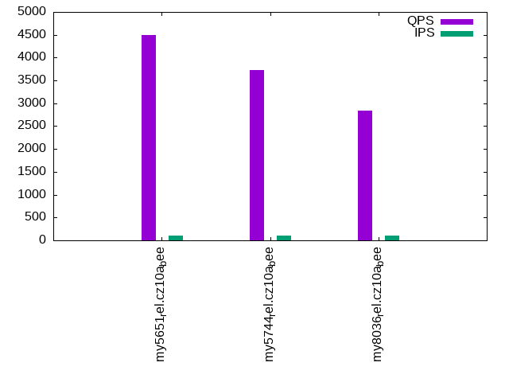

This is a report for the insert benchmark with 30M docs and 1 client(s). It is generated by scripts (bash, awk, sed) and Tufte might not be impressed. An overview of the insert benchmark is here and a short update is here. Below, by DBMS, I mean DBMS+version.config. An example is my8020.c10b40 where my means MySQL, 8020 is version 8.0.20 and c10b40 is the name for the configuration file.
The test server has 8 AMD cores, 16G RAM and an NVMe SSD. It is described here as the Beelink. The benchmark was run with 1 client and there were 1 or 3 connections per client (1 for queries or inserts without rate limits, 1+1 for rate limited inserts+deletes). It uses 1 table. It loads 30M rows per table without secondary indexes, creates 3 secondary indexes per table, then inserts 80m+20m rows per table with a delete per insert to avoid growing the table. It then does 6 read+write tests for 3600s each that do queries as fast as possible with 100,100,500,500,1000,1000 inserts/s and the same for deletes/s per client concurrent with the queries. The database is cached in memory. Clients and the DBMS share one server. The per-database configs are in the per-database subdirectories here.
The tested DBMS are:
The numbers are inserts/s for l.i0, l.i1 and l.i2, indexed docs (or rows) /s for l.x and queries/s for qr100, qp100 thru qr1000, qp1000" The values are the average rate over the entire test for inserts (IPS) and queries (QPS). The range of values for IPS and QPS is split into 3 parts: bottom 25%, middle 50%, top 25%. Values in the bottom 25% have a red background, values in the top 25% have a green background and values in the middle have no color. A gray background is used for values that can be ignored because the DBMS did not sustain the target insert rate. Red backgrounds are not used when the minimum value is within 80% of the max value.
| dbms | l.i0 | l.x | l.i1 | l.i2 | qr100 | qp100 | qr500 | qp500 | qr1000 | qp1000 |
|---|---|---|---|---|---|---|---|---|---|---|
| my5651_rel.cz10a_bee | 99010 | 98684 | 19070 | 11891 | 5638 | 4502 | 5579 | 4553 | 5572 | 4536 |
| my5744_rel.cz10a_bee | 83565 | 146342 | 21147 | 10406 | 4127 | 3725 | 4042 | 3757 | 4124 | 3705 |
| my8036_rel.cz10a_bee | 56391 | 136987 | 17418 | 8669 | 3529 | 2843 | 3507 | 2794 | 3520 | 2827 |
This table has relative throughput, throughput for the DBMS relative to the DBMS in the first line, using the absolute throughput from the previous table. Values less than 0.95 have a yellow background. Values greater than 1.05 have a blue background.
| dbms | l.i0 | l.x | l.i1 | l.i2 | qr100 | qp100 | qr500 | qp500 | qr1000 | qp1000 |
|---|---|---|---|---|---|---|---|---|---|---|
| my5651_rel.cz10a_bee | 1.00 | 1.00 | 1.00 | 1.00 | 1.00 | 1.00 | 1.00 | 1.00 | 1.00 | 1.00 |
| my5744_rel.cz10a_bee | 0.84 | 1.48 | 1.11 | 0.88 | 0.73 | 0.83 | 0.72 | 0.83 | 0.74 | 0.82 |
| my8036_rel.cz10a_bee | 0.57 | 1.39 | 0.91 | 0.73 | 0.63 | 0.63 | 0.63 | 0.61 | 0.63 | 0.62 |
This lists the average rate of inserts/s for the tests that do inserts concurrent with queries. For such tests the query rate is listed in the table above. The read+write tests are setup so that the insert rate should match the target rate every second. Cells that are not at least 95% of the target have a red background to indicate a failure to satisfy the target.
| dbms | qr100.L1 | qp100.L2 | qr500.L3 | qp500.L4 | qr1000.L5 | qp1000.L6 |
|---|---|---|---|---|---|---|
| my5651_rel.cz10a_bee | 100 | 100 | 499 | 499 | 998 | 998 |
| my5744_rel.cz10a_bee | 100 | 100 | 499 | 499 | 998 | 998 |
| my8036_rel.cz10a_bee | 100 | 100 | 498 | 499 | 998 | 998 |
| target | 100 | 100 | 500 | 500 | 1000 | 1000 |
l.i0: load without secondary indexes. Graphs for performance per 1-second interval are here.
Average throughput:
Insert response time histogram: each cell has the percentage of responses that take <= the time in the header and max is the max response time in seconds. For the max column values in the top 25% of the range have a red background and in the bottom 25% of the range have a green background. The red background is not used when the min value is within 80% of the max value.
| dbms | 256us | 1ms | 4ms | 16ms | 64ms | 256ms | 1s | 4s | 16s | gt | max |
|---|---|---|---|---|---|---|---|---|---|---|---|
| my5651_rel.cz10a_bee | 88.678 | 11.202 | 0.116 | 0.001 | 0.003 | 0.098 | |||||
| my5744_rel.cz10a_bee | 2.869 | 96.787 | 0.198 | 0.142 | 0.003 | 0.114 | |||||
| my8036_rel.cz10a_bee | 99.415 | 0.441 | 0.141 | 0.003 | 0.071 |
Performance metrics for the DBMS listed above. Some are normalized by throughput, others are not. Legend for results is here.
ips qps rps rmbps wps wmbps rpq rkbpq wpi wkbpi csps cpups cspq cpupq dbgb1 dbgb2 rss maxop p50 p99 tag 99010 0 867 3.4 304.7 30.0 0.009 0.035 0.003 0.310 12063 22.3 0.122 18 2.0 18.5 2.7 0.098 99976 86578 my5651_rel.cz10a_bee 83565 0 0 0.0 274.1 25.4 0.000 0.000 0.003 0.311 8776 21.5 0.105 21 2.0 18.5 2.9 0.114 84487 72931 my5744_rel.cz10a_bee 56391 0 0 0.0 244.2 18.8 0.000 0.000 0.004 0.342 6587 20.5 0.117 29 2.0 18.6 3.0 0.071 56720 51438 my8036_rel.cz10a_bee
l.x: create secondary indexes.
Average throughput:
Performance metrics for the DBMS listed above. Some are normalized by throughput, others are not. Legend for results is here.
ips qps rps rmbps wps wmbps rpq rkbpq wpi wkbpi csps cpups cspq cpupq dbgb1 dbgb2 rss maxop p50 p99 tag 98684 0 18 0.1 866.4 103.4 0.000 0.001 0.009 1.073 2521 10.7 0.026 9 4.2 20.7 4.9 0.002 NA NA my5651_rel.cz10a_bee 146342 0 0 0.0 1453.6 140.3 0.000 0.000 0.010 0.982 9253 12.3 0.063 7 4.6 21.1 4.4 0.003 NA NA my5744_rel.cz10a_bee 136987 0 704 44.6 2477.4 150.0 0.005 0.333 0.018 1.121 9758 43.2 0.071 25 4.5 21.1 5.3 0.003 NA NA my8036_rel.cz10a_bee
l.i1: continue load after secondary indexes created with 50 inserts per transaction. Graphs for performance per 1-second interval are here.
Average throughput:
Insert response time histogram: each cell has the percentage of responses that take <= the time in the header and max is the max response time in seconds. For the max column values in the top 25% of the range have a red background and in the bottom 25% of the range have a green background. The red background is not used when the min value is within 80% of the max value.
| dbms | 256us | 1ms | 4ms | 16ms | 64ms | 256ms | 1s | 4s | 16s | gt | max |
|---|---|---|---|---|---|---|---|---|---|---|---|
| my5651_rel.cz10a_bee | 96.233 | 3.603 | 0.164 | 0.001 | 0.106 | ||||||
| my5744_rel.cz10a_bee | 97.530 | 2.422 | 0.044 | 0.003 | 0.097 | ||||||
| my8036_rel.cz10a_bee | 97.207 | 2.704 | 0.088 | 0.001 | 0.105 |
Delete response time histogram: each cell has the percentage of responses that take <= the time in the header and max is the max response time in seconds. For the max column values in the top 25% of the range have a red background and in the bottom 25% of the range have a green background. The red background is not used when the min value is within 80% of the max value.
| dbms | 256us | 1ms | 4ms | 16ms | 64ms | 256ms | 1s | 4s | 16s | gt | max |
|---|---|---|---|---|---|---|---|---|---|---|---|
| my5651_rel.cz10a_bee | 97.092 | 2.767 | 0.140 | nonzero | 0.082 | ||||||
| my5744_rel.cz10a_bee | 97.948 | 2.034 | 0.014 | 0.003 | 0.098 | ||||||
| my8036_rel.cz10a_bee | 98.166 | 1.799 | 0.035 | nonzero | 0.103 |
Performance metrics for the DBMS listed above. Some are normalized by throughput, others are not. Legend for results is here.
ips qps rps rmbps wps wmbps rpq rkbpq wpi wkbpi csps cpups cspq cpupq dbgb1 dbgb2 rss maxop p50 p99 tag 19070 0 644 2.5 1721.7 75.1 0.034 0.135 0.090 4.035 15667 34.4 0.822 144 6.2 22.7 6.9 0.106 19828 7842 my5651_rel.cz10a_bee 21147 0 0 0.0 1879.8 82.5 0.000 0.000 0.089 3.993 14621 37.8 0.691 143 6.5 23.0 7.6 0.097 21633 12037 my5744_rel.cz10a_bee 17418 0 32 0.5 2351.5 87.5 0.002 0.029 0.135 5.144 14764 36.5 0.848 168 6.5 23.3 7.8 0.105 17929 8640 my8036_rel.cz10a_bee
l.i2: continue load after secondary indexes created with 5 inserts per transaction. Graphs for performance per 1-second interval are here.
Average throughput:
Insert response time histogram: each cell has the percentage of responses that take <= the time in the header and max is the max response time in seconds. For the max column values in the top 25% of the range have a red background and in the bottom 25% of the range have a green background. The red background is not used when the min value is within 80% of the max value.
| dbms | 256us | 1ms | 4ms | 16ms | 64ms | 256ms | 1s | 4s | 16s | gt | max |
|---|---|---|---|---|---|---|---|---|---|---|---|
| my5651_rel.cz10a_bee | 11.155 | 88.595 | 0.050 | 0.191 | 0.009 | nonzero | 0.081 | ||||
| my5744_rel.cz10a_bee | 0.053 | 99.655 | 0.059 | 0.231 | 0.002 | nonzero | 0.084 | ||||
| my8036_rel.cz10a_bee | 99.574 | 0.196 | 0.228 | 0.002 | nonzero | 0.102 |
Delete response time histogram: each cell has the percentage of responses that take <= the time in the header and max is the max response time in seconds. For the max column values in the top 25% of the range have a red background and in the bottom 25% of the range have a green background. The red background is not used when the min value is within 80% of the max value.
| dbms | 256us | 1ms | 4ms | 16ms | 64ms | 256ms | 1s | 4s | 16s | gt | max |
|---|---|---|---|---|---|---|---|---|---|---|---|
| my5651_rel.cz10a_bee | 12.855 | 86.908 | 0.036 | 0.191 | 0.009 | nonzero | 0.081 | ||||
| my5744_rel.cz10a_bee | 0.092 | 99.640 | 0.037 | 0.230 | 0.002 | nonzero | 0.084 | ||||
| my8036_rel.cz10a_bee | 99.710 | 0.064 | 0.224 | 0.002 | nonzero | 0.102 |
Performance metrics for the DBMS listed above. Some are normalized by throughput, others are not. Legend for results is here.
ips qps rps rmbps wps wmbps rpq rkbpq wpi wkbpi csps cpups cspq cpupq dbgb1 dbgb2 rss maxop p50 p99 tag 11891 0 2131 8.3 1205.4 50.1 0.179 0.717 0.101 4.313 56930 35.7 4.788 240 6.2 22.7 6.9 0.081 11902 10792 my5651_rel.cz10a_bee 10406 0 0 0.0 1102.2 45.3 0.000 0.000 0.106 4.461 44050 36.1 4.233 278 6.5 23.0 7.6 0.084 10387 9040 my5744_rel.cz10a_bee 8669 0 0 0.0 1335.5 46.5 0.000 0.000 0.154 5.497 37982 35.2 4.381 325 6.5 23.3 7.8 0.102 8685 7600 my8036_rel.cz10a_bee
qr100.L1: range queries with 100 insert/s per client. Graphs for performance per 1-second interval are here.
Average throughput:
Query response time histogram: each cell has the percentage of responses that take <= the time in the header and max is the max response time in seconds. For max values in the top 25% of the range have a red background and in the bottom 25% of the range have a green background. The red background is not used when the min value is within 80% of the max value.
| dbms | 256us | 1ms | 4ms | 16ms | 64ms | 256ms | 1s | 4s | 16s | gt | max |
|---|---|---|---|---|---|---|---|---|---|---|---|
| my5651_rel.cz10a_bee | 96.446 | 3.548 | 0.002 | 0.004 | nonzero | 0.019 | |||||
| my5744_rel.cz10a_bee | 71.477 | 28.523 | nonzero | 0.004 | |||||||
| my8036_rel.cz10a_bee | 51.557 | 48.442 | nonzero | nonzero | 0.004 |
Insert response time histogram: each cell has the percentage of responses that take <= the time in the header and max is the max response time in seconds. For max values in the top 25% of the range have a red background and in the bottom 25% of the range have a green background. The red background is not used when the min value is within 80% of the max value.
| dbms | 256us | 1ms | 4ms | 16ms | 64ms | 256ms | 1s | 4s | 16s | gt | max |
|---|---|---|---|---|---|---|---|---|---|---|---|
| my5651_rel.cz10a_bee | 45.778 | 49.583 | 4.639 | 0.046 | |||||||
| my5744_rel.cz10a_bee | 99.375 | 0.611 | 0.014 | 0.016 | |||||||
| my8036_rel.cz10a_bee | 99.750 | 0.222 | 0.028 | 0.025 |
Delete response time histogram: each cell has the percentage of responses that take <= the time in the header and max is the max response time in seconds. For max values in the top 25% of the range have a red background and in the bottom 25% of the range have a green background. The red background is not used when the min value is within 80% of the max value.
| dbms | 256us | 1ms | 4ms | 16ms | 64ms | 256ms | 1s | 4s | 16s | gt | max |
|---|---|---|---|---|---|---|---|---|---|---|---|
| my5651_rel.cz10a_bee | 45.097 | 53.056 | 1.847 | 0.040 | |||||||
| my5744_rel.cz10a_bee | 99.431 | 0.556 | 0.014 | 0.016 | |||||||
| my8036_rel.cz10a_bee | 99.819 | 0.167 | 0.014 | 0.025 |
Performance metrics for the DBMS listed above. Some are normalized by throughput, others are not. Legend for results is here.
ips qps rps rmbps wps wmbps rpq rkbpq wpi wkbpi csps cpups cspq cpupq dbgb1 dbgb2 rss maxop p50 p99 tag 100 5638 4 0.0 538.9 16.1 0.001 0.003 5.400 165.220 23452 13.1 4.160 186 6.2 22.7 6.9 0.019 5593 5400 my5651_rel.cz10a_bee 100 4127 0 0.0 66.3 1.8 0.000 0.000 0.665 18.263 16193 12.7 3.924 246 6.5 23.0 7.6 0.004 4074 3852 my5744_rel.cz10a_bee 100 3529 0 0.0 79.0 2.0 0.000 0.000 0.792 20.491 14119 12.7 4.001 288 6.5 23.3 7.8 0.004 3500 3310 my8036_rel.cz10a_bee
qp100.L2: point queries with 100 insert/s per client. Graphs for performance per 1-second interval are here.
Average throughput:
Query response time histogram: each cell has the percentage of responses that take <= the time in the header and max is the max response time in seconds. For max values in the top 25% of the range have a red background and in the bottom 25% of the range have a green background. The red background is not used when the min value is within 80% of the max value.
| dbms | 256us | 1ms | 4ms | 16ms | 64ms | 256ms | 1s | 4s | 16s | gt | max |
|---|---|---|---|---|---|---|---|---|---|---|---|
| my5651_rel.cz10a_bee | 93.726 | 6.268 | 0.003 | 0.003 | nonzero | 0.026 | |||||
| my5744_rel.cz10a_bee | 83.395 | 16.603 | 0.001 | nonzero | 0.005 | ||||||
| my8036_rel.cz10a_bee | 12.182 | 87.816 | 0.002 | nonzero | 0.004 |
Insert response time histogram: each cell has the percentage of responses that take <= the time in the header and max is the max response time in seconds. For max values in the top 25% of the range have a red background and in the bottom 25% of the range have a green background. The red background is not used when the min value is within 80% of the max value.
| dbms | 256us | 1ms | 4ms | 16ms | 64ms | 256ms | 1s | 4s | 16s | gt | max |
|---|---|---|---|---|---|---|---|---|---|---|---|
| my5651_rel.cz10a_bee | 52.097 | 46.611 | 1.292 | 0.038 | |||||||
| my5744_rel.cz10a_bee | 99.361 | 0.639 | 0.014 | ||||||||
| my8036_rel.cz10a_bee | 99.694 | 0.292 | 0.014 | 0.023 |
Delete response time histogram: each cell has the percentage of responses that take <= the time in the header and max is the max response time in seconds. For max values in the top 25% of the range have a red background and in the bottom 25% of the range have a green background. The red background is not used when the min value is within 80% of the max value.
| dbms | 256us | 1ms | 4ms | 16ms | 64ms | 256ms | 1s | 4s | 16s | gt | max |
|---|---|---|---|---|---|---|---|---|---|---|---|
| my5651_rel.cz10a_bee | 51.208 | 48.208 | 0.583 | 0.039 | |||||||
| my5744_rel.cz10a_bee | 99.417 | 0.583 | 0.014 | ||||||||
| my8036_rel.cz10a_bee | 99.806 | 0.181 | 0.014 | 0.024 |
Performance metrics for the DBMS listed above. Some are normalized by throughput, others are not. Legend for results is here.
ips qps rps rmbps wps wmbps rpq rkbpq wpi wkbpi csps cpups cspq cpupq dbgb1 dbgb2 rss maxop p50 p99 tag 100 4502 4 0.0 177.6 5.3 0.001 0.004 1.780 54.808 18872 13.7 4.192 243 6.2 22.7 6.9 0.026 4491 4204 my5651_rel.cz10a_bee 100 3725 0 0.0 16.5 0.3 0.000 0.000 0.166 3.496 15258 13.6 4.097 292 6.5 23.0 7.6 0.005 3662 3420 my5744_rel.cz10a_bee 100 2843 0 0.0 26.0 0.6 0.000 0.000 0.260 6.384 11926 13.0 4.195 366 6.5 23.3 7.8 0.004 2748 2603 my8036_rel.cz10a_bee
qr500.L3: range queries with 500 insert/s per client. Graphs for performance per 1-second interval are here.
Average throughput:
Query response time histogram: each cell has the percentage of responses that take <= the time in the header and max is the max response time in seconds. For max values in the top 25% of the range have a red background and in the bottom 25% of the range have a green background. The red background is not used when the min value is within 80% of the max value.
| dbms | 256us | 1ms | 4ms | 16ms | 64ms | 256ms | 1s | 4s | 16s | gt | max |
|---|---|---|---|---|---|---|---|---|---|---|---|
| my5651_rel.cz10a_bee | 96.238 | 3.757 | 0.002 | 0.003 | nonzero | 0.026 | |||||
| my5744_rel.cz10a_bee | 68.882 | 31.117 | nonzero | nonzero | 0.005 | ||||||
| my8036_rel.cz10a_bee | 50.717 | 49.282 | 0.001 | nonzero | 0.004 |
Insert response time histogram: each cell has the percentage of responses that take <= the time in the header and max is the max response time in seconds. For max values in the top 25% of the range have a red background and in the bottom 25% of the range have a green background. The red background is not used when the min value is within 80% of the max value.
| dbms | 256us | 1ms | 4ms | 16ms | 64ms | 256ms | 1s | 4s | 16s | gt | max |
|---|---|---|---|---|---|---|---|---|---|---|---|
| my5651_rel.cz10a_bee | 89.650 | 10.161 | 0.189 | 0.041 | |||||||
| my5744_rel.cz10a_bee | 99.453 | 0.544 | 0.003 | 0.064 | |||||||
| my8036_rel.cz10a_bee | 98.986 | 0.997 | 0.017 | 0.042 |
Delete response time histogram: each cell has the percentage of responses that take <= the time in the header and max is the max response time in seconds. For max values in the top 25% of the range have a red background and in the bottom 25% of the range have a green background. The red background is not used when the min value is within 80% of the max value.
| dbms | 256us | 1ms | 4ms | 16ms | 64ms | 256ms | 1s | 4s | 16s | gt | max |
|---|---|---|---|---|---|---|---|---|---|---|---|
| my5651_rel.cz10a_bee | 90.172 | 9.722 | 0.106 | 0.035 | |||||||
| my5744_rel.cz10a_bee | 99.569 | 0.428 | 0.003 | 0.064 | |||||||
| my8036_rel.cz10a_bee | 99.619 | 0.367 | 0.014 | 0.049 |
Performance metrics for the DBMS listed above. Some are normalized by throughput, others are not. Legend for results is here.
ips qps rps rmbps wps wmbps rpq rkbpq wpi wkbpi csps cpups cspq cpupq dbgb1 dbgb2 rss maxop p50 p99 tag 499 5579 17 0.1 143.9 4.8 0.003 0.012 0.288 9.859 22146 13.5 3.969 194 6.2 22.7 6.9 0.026 5529 5342 my5651_rel.cz10a_bee 499 4042 0 0.0 64.9 2.2 0.000 0.000 0.130 4.433 15957 13.5 3.948 267 6.5 23.0 7.6 0.005 4021 3822 my5744_rel.cz10a_bee 498 3507 0 0.0 95.6 2.9 0.000 0.000 0.192 6.003 14198 13.7 4.049 313 6.5 23.3 7.8 0.004 3484 3294 my8036_rel.cz10a_bee
qp500.L4: point queries with 500 insert/s per client. Graphs for performance per 1-second interval are here.
Average throughput:
Query response time histogram: each cell has the percentage of responses that take <= the time in the header and max is the max response time in seconds. For max values in the top 25% of the range have a red background and in the bottom 25% of the range have a green background. The red background is not used when the min value is within 80% of the max value.
| dbms | 256us | 1ms | 4ms | 16ms | 64ms | 256ms | 1s | 4s | 16s | gt | max |
|---|---|---|---|---|---|---|---|---|---|---|---|
| my5651_rel.cz10a_bee | 93.433 | 6.560 | 0.006 | 0.002 | 0.011 | ||||||
| my5744_rel.cz10a_bee | 83.111 | 16.886 | 0.003 | nonzero | 0.005 | ||||||
| my8036_rel.cz10a_bee | 7.642 | 92.354 | 0.004 | nonzero | 0.008 |
Insert response time histogram: each cell has the percentage of responses that take <= the time in the header and max is the max response time in seconds. For max values in the top 25% of the range have a red background and in the bottom 25% of the range have a green background. The red background is not used when the min value is within 80% of the max value.
| dbms | 256us | 1ms | 4ms | 16ms | 64ms | 256ms | 1s | 4s | 16s | gt | max |
|---|---|---|---|---|---|---|---|---|---|---|---|
| my5651_rel.cz10a_bee | 89.639 | 10.228 | 0.133 | 0.043 | |||||||
| my5744_rel.cz10a_bee | 99.464 | 0.531 | 0.006 | 0.049 | |||||||
| my8036_rel.cz10a_bee | 98.831 | 1.158 | 0.011 | 0.043 |
Delete response time histogram: each cell has the percentage of responses that take <= the time in the header and max is the max response time in seconds. For max values in the top 25% of the range have a red background and in the bottom 25% of the range have a green background. The red background is not used when the min value is within 80% of the max value.
| dbms | 256us | 1ms | 4ms | 16ms | 64ms | 256ms | 1s | 4s | 16s | gt | max |
|---|---|---|---|---|---|---|---|---|---|---|---|
| my5651_rel.cz10a_bee | 90.222 | 9.722 | 0.056 | 0.038 | |||||||
| my5744_rel.cz10a_bee | 99.567 | 0.428 | 0.006 | 0.047 | |||||||
| my8036_rel.cz10a_bee | 99.650 | 0.344 | 0.006 | 0.049 |
Performance metrics for the DBMS listed above. Some are normalized by throughput, others are not. Legend for results is here.
ips qps rps rmbps wps wmbps rpq rkbpq wpi wkbpi csps cpups cspq cpupq dbgb1 dbgb2 rss maxop p50 p99 tag 499 4553 16 0.1 167.4 5.5 0.004 0.015 0.336 11.305 19199 13.7 4.217 241 6.2 22.7 6.9 0.011 4508 4228 my5651_rel.cz10a_bee 499 3757 0 0.0 64.5 2.2 0.000 0.000 0.129 4.461 15772 14.4 4.198 307 6.5 23.0 7.6 0.005 3692 3436 my5744_rel.cz10a_bee 499 2794 0 0.0 93.3 2.9 0.000 0.000 0.187 5.872 12028 14.0 4.306 401 6.5 23.3 7.8 0.008 2732 2573 my8036_rel.cz10a_bee
qr1000.L5: range queries with 1000 insert/s per client. Graphs for performance per 1-second interval are here.
Average throughput:
Query response time histogram: each cell has the percentage of responses that take <= the time in the header and max is the max response time in seconds. For max values in the top 25% of the range have a red background and in the bottom 25% of the range have a green background. The red background is not used when the min value is within 80% of the max value.
| dbms | 256us | 1ms | 4ms | 16ms | 64ms | 256ms | 1s | 4s | 16s | gt | max |
|---|---|---|---|---|---|---|---|---|---|---|---|
| my5651_rel.cz10a_bee | 96.059 | 3.935 | 0.003 | 0.003 | nonzero | 0.016 | |||||
| my5744_rel.cz10a_bee | 71.376 | 28.623 | 0.001 | nonzero | 0.006 | ||||||
| my8036_rel.cz10a_bee | 51.135 | 48.863 | 0.002 | nonzero | 0.005 |
Insert response time histogram: each cell has the percentage of responses that take <= the time in the header and max is the max response time in seconds. For max values in the top 25% of the range have a red background and in the bottom 25% of the range have a green background. The red background is not used when the min value is within 80% of the max value.
| dbms | 256us | 1ms | 4ms | 16ms | 64ms | 256ms | 1s | 4s | 16s | gt | max |
|---|---|---|---|---|---|---|---|---|---|---|---|
| my5651_rel.cz10a_bee | 93.017 | 6.913 | 0.071 | 0.041 | |||||||
| my5744_rel.cz10a_bee | 99.462 | 0.531 | 0.006 | 0.001 | 0.067 | ||||||
| my8036_rel.cz10a_bee | 96.790 | 3.193 | 0.017 | 0.049 |
Delete response time histogram: each cell has the percentage of responses that take <= the time in the header and max is the max response time in seconds. For max values in the top 25% of the range have a red background and in the bottom 25% of the range have a green background. The red background is not used when the min value is within 80% of the max value.
| dbms | 256us | 1ms | 4ms | 16ms | 64ms | 256ms | 1s | 4s | 16s | gt | max |
|---|---|---|---|---|---|---|---|---|---|---|---|
| my5651_rel.cz10a_bee | 93.963 | 5.999 | 0.039 | 0.039 | |||||||
| my5744_rel.cz10a_bee | 99.606 | 0.390 | 0.003 | 0.001 | 0.066 | ||||||
| my8036_rel.cz10a_bee | 99.572 | 0.415 | 0.013 | 0.051 |
Performance metrics for the DBMS listed above. Some are normalized by throughput, others are not. Legend for results is here.
ips qps rps rmbps wps wmbps rpq rkbpq wpi wkbpi csps cpups cspq cpupq dbgb1 dbgb2 rss maxop p50 p99 tag 998 5572 33 0.1 392.1 12.8 0.006 0.023 0.393 13.108 23131 14.8 4.151 212 6.2 22.7 6.9 0.016 5530 5324 my5651_rel.cz10a_bee 998 4124 0 0.0 136.0 4.8 0.000 0.000 0.136 4.939 16645 14.7 4.036 285 6.5 23.0 7.5 0.006 4074 3852 my5744_rel.cz10a_bee 998 3520 0 0.0 201.2 6.2 0.000 0.000 0.202 6.388 14726 14.8 4.183 336 6.5 23.3 7.8 0.005 3484 3277 my8036_rel.cz10a_bee
qp1000.L6: point queries with 1000 insert/s per client. Graphs for performance per 1-second interval are here.
Average throughput:
Query response time histogram: each cell has the percentage of responses that take <= the time in the header and max is the max response time in seconds. For max values in the top 25% of the range have a red background and in the bottom 25% of the range have a green background. The red background is not used when the min value is within 80% of the max value.
| dbms | 256us | 1ms | 4ms | 16ms | 64ms | 256ms | 1s | 4s | 16s | gt | max |
|---|---|---|---|---|---|---|---|---|---|---|---|
| my5651_rel.cz10a_bee | 92.728 | 7.262 | 0.008 | 0.002 | 0.010 | ||||||
| my5744_rel.cz10a_bee | 81.158 | 18.834 | 0.007 | nonzero | 0.007 | ||||||
| my8036_rel.cz10a_bee | 11.794 | 88.197 | 0.009 | nonzero | 0.007 |
Insert response time histogram: each cell has the percentage of responses that take <= the time in the header and max is the max response time in seconds. For max values in the top 25% of the range have a red background and in the bottom 25% of the range have a green background. The red background is not used when the min value is within 80% of the max value.
| dbms | 256us | 1ms | 4ms | 16ms | 64ms | 256ms | 1s | 4s | 16s | gt | max |
|---|---|---|---|---|---|---|---|---|---|---|---|
| my5651_rel.cz10a_bee | 93.326 | 6.596 | 0.078 | 0.039 | |||||||
| my5744_rel.cz10a_bee | 99.413 | 0.583 | 0.003 | 0.001 | 0.064 | ||||||
| my8036_rel.cz10a_bee | 96.331 | 3.653 | 0.017 | 0.050 |
Delete response time histogram: each cell has the percentage of responses that take <= the time in the header and max is the max response time in seconds. For max values in the top 25% of the range have a red background and in the bottom 25% of the range have a green background. The red background is not used when the min value is within 80% of the max value.
| dbms | 256us | 1ms | 4ms | 16ms | 64ms | 256ms | 1s | 4s | 16s | gt | max |
|---|---|---|---|---|---|---|---|---|---|---|---|
| my5651_rel.cz10a_bee | 94.332 | 5.624 | 0.044 | 0.041 | |||||||
| my5744_rel.cz10a_bee | 99.589 | 0.408 | 0.003 | 0.062 | |||||||
| my8036_rel.cz10a_bee | 99.553 | 0.435 | 0.013 | 0.051 |
Performance metrics for the DBMS listed above. Some are normalized by throughput, others are not. Legend for results is here.
ips qps rps rmbps wps wmbps rpq rkbpq wpi wkbpi csps cpups cspq cpupq dbgb1 dbgb2 rss maxop p50 p99 tag 998 4536 33 0.1 284.5 9.5 0.007 0.029 0.285 9.779 19750 14.8 4.353 261 6.2 22.7 6.9 0.010 4477 4204 my5651_rel.cz10a_bee 998 3705 0 0.0 123.7 4.4 0.000 0.000 0.124 4.551 15780 15.2 4.259 328 6.5 23.0 7.5 0.007 3644 3420 my5744_rel.cz10a_bee 998 2827 0 0.0 198.7 6.1 0.000 0.000 0.199 6.308 12671 15.2 4.482 430 6.5 23.3 7.8 0.007 2749 2573 my8036_rel.cz10a_bee
l.i0: load without secondary indexes
Performance metrics for all DBMS, not just the ones listed above. Some are normalized by throughput, others are not. Legend for results is here.
ips qps rps rmbps wps wmbps rpq rkbpq wpi wkbpi csps cpups cspq cpupq dbgb1 dbgb2 rss maxop p50 p99 tag 99010 0 867 3.4 304.7 30.0 0.009 0.035 0.003 0.310 12063 22.3 0.122 18 2.0 18.5 2.7 0.098 99976 86578 my5651_rel.cz10a_bee 83565 0 0 0.0 274.1 25.4 0.000 0.000 0.003 0.311 8776 21.5 0.105 21 2.0 18.5 2.9 0.114 84487 72931 my5744_rel.cz10a_bee 56391 0 0 0.0 244.2 18.8 0.000 0.000 0.004 0.342 6587 20.5 0.117 29 2.0 18.6 3.0 0.071 56720 51438 my8036_rel.cz10a_bee
l.x: create secondary indexes
Performance metrics for all DBMS, not just the ones listed above. Some are normalized by throughput, others are not. Legend for results is here.
ips qps rps rmbps wps wmbps rpq rkbpq wpi wkbpi csps cpups cspq cpupq dbgb1 dbgb2 rss maxop p50 p99 tag 98684 0 18 0.1 866.4 103.4 0.000 0.001 0.009 1.073 2521 10.7 0.026 9 4.2 20.7 4.9 0.002 NA NA my5651_rel.cz10a_bee 146342 0 0 0.0 1453.6 140.3 0.000 0.000 0.010 0.982 9253 12.3 0.063 7 4.6 21.1 4.4 0.003 NA NA my5744_rel.cz10a_bee 136987 0 704 44.6 2477.4 150.0 0.005 0.333 0.018 1.121 9758 43.2 0.071 25 4.5 21.1 5.3 0.003 NA NA my8036_rel.cz10a_bee
l.i1: continue load after secondary indexes created with 50 inserts per transaction
Performance metrics for all DBMS, not just the ones listed above. Some are normalized by throughput, others are not. Legend for results is here.
ips qps rps rmbps wps wmbps rpq rkbpq wpi wkbpi csps cpups cspq cpupq dbgb1 dbgb2 rss maxop p50 p99 tag 19070 0 644 2.5 1721.7 75.1 0.034 0.135 0.090 4.035 15667 34.4 0.822 144 6.2 22.7 6.9 0.106 19828 7842 my5651_rel.cz10a_bee 21147 0 0 0.0 1879.8 82.5 0.000 0.000 0.089 3.993 14621 37.8 0.691 143 6.5 23.0 7.6 0.097 21633 12037 my5744_rel.cz10a_bee 17418 0 32 0.5 2351.5 87.5 0.002 0.029 0.135 5.144 14764 36.5 0.848 168 6.5 23.3 7.8 0.105 17929 8640 my8036_rel.cz10a_bee
l.i2: continue load after secondary indexes created with 5 inserts per transaction
Performance metrics for all DBMS, not just the ones listed above. Some are normalized by throughput, others are not. Legend for results is here.
ips qps rps rmbps wps wmbps rpq rkbpq wpi wkbpi csps cpups cspq cpupq dbgb1 dbgb2 rss maxop p50 p99 tag 11891 0 2131 8.3 1205.4 50.1 0.179 0.717 0.101 4.313 56930 35.7 4.788 240 6.2 22.7 6.9 0.081 11902 10792 my5651_rel.cz10a_bee 10406 0 0 0.0 1102.2 45.3 0.000 0.000 0.106 4.461 44050 36.1 4.233 278 6.5 23.0 7.6 0.084 10387 9040 my5744_rel.cz10a_bee 8669 0 0 0.0 1335.5 46.5 0.000 0.000 0.154 5.497 37982 35.2 4.381 325 6.5 23.3 7.8 0.102 8685 7600 my8036_rel.cz10a_bee
qr100.L1: range queries with 100 insert/s per client
Performance metrics for all DBMS, not just the ones listed above. Some are normalized by throughput, others are not. Legend for results is here.
ips qps rps rmbps wps wmbps rpq rkbpq wpi wkbpi csps cpups cspq cpupq dbgb1 dbgb2 rss maxop p50 p99 tag 100 5638 4 0.0 538.9 16.1 0.001 0.003 5.400 165.220 23452 13.1 4.160 186 6.2 22.7 6.9 0.019 5593 5400 my5651_rel.cz10a_bee 100 4127 0 0.0 66.3 1.8 0.000 0.000 0.665 18.263 16193 12.7 3.924 246 6.5 23.0 7.6 0.004 4074 3852 my5744_rel.cz10a_bee 100 3529 0 0.0 79.0 2.0 0.000 0.000 0.792 20.491 14119 12.7 4.001 288 6.5 23.3 7.8 0.004 3500 3310 my8036_rel.cz10a_bee
qp100.L2: point queries with 100 insert/s per client
Performance metrics for all DBMS, not just the ones listed above. Some are normalized by throughput, others are not. Legend for results is here.
ips qps rps rmbps wps wmbps rpq rkbpq wpi wkbpi csps cpups cspq cpupq dbgb1 dbgb2 rss maxop p50 p99 tag 100 4502 4 0.0 177.6 5.3 0.001 0.004 1.780 54.808 18872 13.7 4.192 243 6.2 22.7 6.9 0.026 4491 4204 my5651_rel.cz10a_bee 100 3725 0 0.0 16.5 0.3 0.000 0.000 0.166 3.496 15258 13.6 4.097 292 6.5 23.0 7.6 0.005 3662 3420 my5744_rel.cz10a_bee 100 2843 0 0.0 26.0 0.6 0.000 0.000 0.260 6.384 11926 13.0 4.195 366 6.5 23.3 7.8 0.004 2748 2603 my8036_rel.cz10a_bee
qr500.L3: range queries with 500 insert/s per client
Performance metrics for all DBMS, not just the ones listed above. Some are normalized by throughput, others are not. Legend for results is here.
ips qps rps rmbps wps wmbps rpq rkbpq wpi wkbpi csps cpups cspq cpupq dbgb1 dbgb2 rss maxop p50 p99 tag 499 5579 17 0.1 143.9 4.8 0.003 0.012 0.288 9.859 22146 13.5 3.969 194 6.2 22.7 6.9 0.026 5529 5342 my5651_rel.cz10a_bee 499 4042 0 0.0 64.9 2.2 0.000 0.000 0.130 4.433 15957 13.5 3.948 267 6.5 23.0 7.6 0.005 4021 3822 my5744_rel.cz10a_bee 498 3507 0 0.0 95.6 2.9 0.000 0.000 0.192 6.003 14198 13.7 4.049 313 6.5 23.3 7.8 0.004 3484 3294 my8036_rel.cz10a_bee
qp500.L4: point queries with 500 insert/s per client
Performance metrics for all DBMS, not just the ones listed above. Some are normalized by throughput, others are not. Legend for results is here.
ips qps rps rmbps wps wmbps rpq rkbpq wpi wkbpi csps cpups cspq cpupq dbgb1 dbgb2 rss maxop p50 p99 tag 499 4553 16 0.1 167.4 5.5 0.004 0.015 0.336 11.305 19199 13.7 4.217 241 6.2 22.7 6.9 0.011 4508 4228 my5651_rel.cz10a_bee 499 3757 0 0.0 64.5 2.2 0.000 0.000 0.129 4.461 15772 14.4 4.198 307 6.5 23.0 7.6 0.005 3692 3436 my5744_rel.cz10a_bee 499 2794 0 0.0 93.3 2.9 0.000 0.000 0.187 5.872 12028 14.0 4.306 401 6.5 23.3 7.8 0.008 2732 2573 my8036_rel.cz10a_bee
qr1000.L5: range queries with 1000 insert/s per client
Performance metrics for all DBMS, not just the ones listed above. Some are normalized by throughput, others are not. Legend for results is here.
ips qps rps rmbps wps wmbps rpq rkbpq wpi wkbpi csps cpups cspq cpupq dbgb1 dbgb2 rss maxop p50 p99 tag 998 5572 33 0.1 392.1 12.8 0.006 0.023 0.393 13.108 23131 14.8 4.151 212 6.2 22.7 6.9 0.016 5530 5324 my5651_rel.cz10a_bee 998 4124 0 0.0 136.0 4.8 0.000 0.000 0.136 4.939 16645 14.7 4.036 285 6.5 23.0 7.5 0.006 4074 3852 my5744_rel.cz10a_bee 998 3520 0 0.0 201.2 6.2 0.000 0.000 0.202 6.388 14726 14.8 4.183 336 6.5 23.3 7.8 0.005 3484 3277 my8036_rel.cz10a_bee
qp1000.L6: point queries with 1000 insert/s per client
Performance metrics for all DBMS, not just the ones listed above. Some are normalized by throughput, others are not. Legend for results is here.
ips qps rps rmbps wps wmbps rpq rkbpq wpi wkbpi csps cpups cspq cpupq dbgb1 dbgb2 rss maxop p50 p99 tag 998 4536 33 0.1 284.5 9.5 0.007 0.029 0.285 9.779 19750 14.8 4.353 261 6.2 22.7 6.9 0.010 4477 4204 my5651_rel.cz10a_bee 998 3705 0 0.0 123.7 4.4 0.000 0.000 0.124 4.551 15780 15.2 4.259 328 6.5 23.0 7.5 0.007 3644 3420 my5744_rel.cz10a_bee 998 2827 0 0.0 198.7 6.1 0.000 0.000 0.199 6.308 12671 15.2 4.482 430 6.5 23.3 7.8 0.007 2749 2573 my8036_rel.cz10a_bee
Insert response time histogram
256us 1ms 4ms 16ms 64ms 256ms 1s 4s 16s gt max tag 0.000 88.678 11.202 0.116 0.001 0.003 0.000 0.000 0.000 0.000 0.098 my5651_rel.cz10a_bee 0.000 2.869 96.787 0.198 0.142 0.003 0.000 0.000 0.000 0.000 0.114 my5744_rel.cz10a_bee 0.000 0.000 99.415 0.441 0.141 0.003 0.000 0.000 0.000 0.000 0.071 my8036_rel.cz10a_bee
TODO - determine whether there is data for create index response time
Insert response time histogram
256us 1ms 4ms 16ms 64ms 256ms 1s 4s 16s gt max tag 0.000 0.000 96.233 3.603 0.164 0.001 0.000 0.000 0.000 0.000 0.106 my5651_rel.cz10a_bee 0.000 0.000 97.530 2.422 0.044 0.003 0.000 0.000 0.000 0.000 0.097 my5744_rel.cz10a_bee 0.000 0.000 97.207 2.704 0.088 0.001 0.000 0.000 0.000 0.000 0.105 my8036_rel.cz10a_bee
Delete response time histogram
256us 1ms 4ms 16ms 64ms 256ms 1s 4s 16s gt max tag 0.000 0.000 97.092 2.767 0.140 nonzero 0.000 0.000 0.000 0.000 0.082 my5651_rel.cz10a_bee 0.000 0.000 97.948 2.034 0.014 0.003 0.000 0.000 0.000 0.000 0.098 my5744_rel.cz10a_bee 0.000 0.000 98.166 1.799 0.035 nonzero 0.000 0.000 0.000 0.000 0.103 my8036_rel.cz10a_bee
Insert response time histogram
256us 1ms 4ms 16ms 64ms 256ms 1s 4s 16s gt max tag 11.155 88.595 0.050 0.191 0.009 nonzero 0.000 0.000 0.000 0.000 0.081 my5651_rel.cz10a_bee 0.053 99.655 0.059 0.231 0.002 nonzero 0.000 0.000 0.000 0.000 0.084 my5744_rel.cz10a_bee 0.000 99.574 0.196 0.228 0.002 nonzero 0.000 0.000 0.000 0.000 0.102 my8036_rel.cz10a_bee
Delete response time histogram
256us 1ms 4ms 16ms 64ms 256ms 1s 4s 16s gt max tag 12.855 86.908 0.036 0.191 0.009 nonzero 0.000 0.000 0.000 0.000 0.081 my5651_rel.cz10a_bee 0.092 99.640 0.037 0.230 0.002 nonzero 0.000 0.000 0.000 0.000 0.084 my5744_rel.cz10a_bee 0.000 99.710 0.064 0.224 0.002 nonzero 0.000 0.000 0.000 0.000 0.102 my8036_rel.cz10a_bee
Query response time histogram
256us 1ms 4ms 16ms 64ms 256ms 1s 4s 16s gt max tag 96.446 3.548 0.002 0.004 nonzero 0.000 0.000 0.000 0.000 0.000 0.019 my5651_rel.cz10a_bee 71.477 28.523 nonzero 0.000 0.000 0.000 0.000 0.000 0.000 0.000 0.004 my5744_rel.cz10a_bee 51.557 48.442 nonzero nonzero 0.000 0.000 0.000 0.000 0.000 0.000 0.004 my8036_rel.cz10a_bee
Insert response time histogram
256us 1ms 4ms 16ms 64ms 256ms 1s 4s 16s gt max tag 0.000 0.000 45.778 49.583 4.639 0.000 0.000 0.000 0.000 0.000 0.046 my5651_rel.cz10a_bee 0.000 0.000 99.375 0.611 0.014 0.000 0.000 0.000 0.000 0.000 0.016 my5744_rel.cz10a_bee 0.000 0.000 99.750 0.222 0.028 0.000 0.000 0.000 0.000 0.000 0.025 my8036_rel.cz10a_bee
Delete response time histogram
256us 1ms 4ms 16ms 64ms 256ms 1s 4s 16s gt max tag 0.000 0.000 45.097 53.056 1.847 0.000 0.000 0.000 0.000 0.000 0.040 my5651_rel.cz10a_bee 0.000 0.000 99.431 0.556 0.014 0.000 0.000 0.000 0.000 0.000 0.016 my5744_rel.cz10a_bee 0.000 0.000 99.819 0.167 0.014 0.000 0.000 0.000 0.000 0.000 0.025 my8036_rel.cz10a_bee
Query response time histogram
256us 1ms 4ms 16ms 64ms 256ms 1s 4s 16s gt max tag 93.726 6.268 0.003 0.003 nonzero 0.000 0.000 0.000 0.000 0.000 0.026 my5651_rel.cz10a_bee 83.395 16.603 0.001 nonzero 0.000 0.000 0.000 0.000 0.000 0.000 0.005 my5744_rel.cz10a_bee 12.182 87.816 0.002 nonzero 0.000 0.000 0.000 0.000 0.000 0.000 0.004 my8036_rel.cz10a_bee
Insert response time histogram
256us 1ms 4ms 16ms 64ms 256ms 1s 4s 16s gt max tag 0.000 0.000 52.097 46.611 1.292 0.000 0.000 0.000 0.000 0.000 0.038 my5651_rel.cz10a_bee 0.000 0.000 99.361 0.639 0.000 0.000 0.000 0.000 0.000 0.000 0.014 my5744_rel.cz10a_bee 0.000 0.000 99.694 0.292 0.014 0.000 0.000 0.000 0.000 0.000 0.023 my8036_rel.cz10a_bee
Delete response time histogram
256us 1ms 4ms 16ms 64ms 256ms 1s 4s 16s gt max tag 0.000 0.000 51.208 48.208 0.583 0.000 0.000 0.000 0.000 0.000 0.039 my5651_rel.cz10a_bee 0.000 0.000 99.417 0.583 0.000 0.000 0.000 0.000 0.000 0.000 0.014 my5744_rel.cz10a_bee 0.000 0.000 99.806 0.181 0.014 0.000 0.000 0.000 0.000 0.000 0.024 my8036_rel.cz10a_bee
Query response time histogram
256us 1ms 4ms 16ms 64ms 256ms 1s 4s 16s gt max tag 96.238 3.757 0.002 0.003 nonzero 0.000 0.000 0.000 0.000 0.000 0.026 my5651_rel.cz10a_bee 68.882 31.117 nonzero nonzero 0.000 0.000 0.000 0.000 0.000 0.000 0.005 my5744_rel.cz10a_bee 50.717 49.282 0.001 nonzero 0.000 0.000 0.000 0.000 0.000 0.000 0.004 my8036_rel.cz10a_bee
Insert response time histogram
256us 1ms 4ms 16ms 64ms 256ms 1s 4s 16s gt max tag 0.000 0.000 89.650 10.161 0.189 0.000 0.000 0.000 0.000 0.000 0.041 my5651_rel.cz10a_bee 0.000 0.000 99.453 0.544 0.003 0.000 0.000 0.000 0.000 0.000 0.064 my5744_rel.cz10a_bee 0.000 0.000 98.986 0.997 0.017 0.000 0.000 0.000 0.000 0.000 0.042 my8036_rel.cz10a_bee
Delete response time histogram
256us 1ms 4ms 16ms 64ms 256ms 1s 4s 16s gt max tag 0.000 0.000 90.172 9.722 0.106 0.000 0.000 0.000 0.000 0.000 0.035 my5651_rel.cz10a_bee 0.000 0.000 99.569 0.428 0.003 0.000 0.000 0.000 0.000 0.000 0.064 my5744_rel.cz10a_bee 0.000 0.000 99.619 0.367 0.014 0.000 0.000 0.000 0.000 0.000 0.049 my8036_rel.cz10a_bee
Query response time histogram
256us 1ms 4ms 16ms 64ms 256ms 1s 4s 16s gt max tag 93.433 6.560 0.006 0.002 0.000 0.000 0.000 0.000 0.000 0.000 0.011 my5651_rel.cz10a_bee 83.111 16.886 0.003 nonzero 0.000 0.000 0.000 0.000 0.000 0.000 0.005 my5744_rel.cz10a_bee 7.642 92.354 0.004 nonzero 0.000 0.000 0.000 0.000 0.000 0.000 0.008 my8036_rel.cz10a_bee
Insert response time histogram
256us 1ms 4ms 16ms 64ms 256ms 1s 4s 16s gt max tag 0.000 0.000 89.639 10.228 0.133 0.000 0.000 0.000 0.000 0.000 0.043 my5651_rel.cz10a_bee 0.000 0.000 99.464 0.531 0.006 0.000 0.000 0.000 0.000 0.000 0.049 my5744_rel.cz10a_bee 0.000 0.000 98.831 1.158 0.011 0.000 0.000 0.000 0.000 0.000 0.043 my8036_rel.cz10a_bee
Delete response time histogram
256us 1ms 4ms 16ms 64ms 256ms 1s 4s 16s gt max tag 0.000 0.000 90.222 9.722 0.056 0.000 0.000 0.000 0.000 0.000 0.038 my5651_rel.cz10a_bee 0.000 0.000 99.567 0.428 0.006 0.000 0.000 0.000 0.000 0.000 0.047 my5744_rel.cz10a_bee 0.000 0.000 99.650 0.344 0.006 0.000 0.000 0.000 0.000 0.000 0.049 my8036_rel.cz10a_bee
Query response time histogram
256us 1ms 4ms 16ms 64ms 256ms 1s 4s 16s gt max tag 96.059 3.935 0.003 0.003 nonzero 0.000 0.000 0.000 0.000 0.000 0.016 my5651_rel.cz10a_bee 71.376 28.623 0.001 nonzero 0.000 0.000 0.000 0.000 0.000 0.000 0.006 my5744_rel.cz10a_bee 51.135 48.863 0.002 nonzero 0.000 0.000 0.000 0.000 0.000 0.000 0.005 my8036_rel.cz10a_bee
Insert response time histogram
256us 1ms 4ms 16ms 64ms 256ms 1s 4s 16s gt max tag 0.000 0.000 93.017 6.913 0.071 0.000 0.000 0.000 0.000 0.000 0.041 my5651_rel.cz10a_bee 0.000 0.000 99.462 0.531 0.006 0.001 0.000 0.000 0.000 0.000 0.067 my5744_rel.cz10a_bee 0.000 0.000 96.790 3.193 0.017 0.000 0.000 0.000 0.000 0.000 0.049 my8036_rel.cz10a_bee
Delete response time histogram
256us 1ms 4ms 16ms 64ms 256ms 1s 4s 16s gt max tag 0.000 0.000 93.963 5.999 0.039 0.000 0.000 0.000 0.000 0.000 0.039 my5651_rel.cz10a_bee 0.000 0.000 99.606 0.390 0.003 0.001 0.000 0.000 0.000 0.000 0.066 my5744_rel.cz10a_bee 0.000 0.000 99.572 0.415 0.013 0.000 0.000 0.000 0.000 0.000 0.051 my8036_rel.cz10a_bee
Query response time histogram
256us 1ms 4ms 16ms 64ms 256ms 1s 4s 16s gt max tag 92.728 7.262 0.008 0.002 0.000 0.000 0.000 0.000 0.000 0.000 0.010 my5651_rel.cz10a_bee 81.158 18.834 0.007 nonzero 0.000 0.000 0.000 0.000 0.000 0.000 0.007 my5744_rel.cz10a_bee 11.794 88.197 0.009 nonzero 0.000 0.000 0.000 0.000 0.000 0.000 0.007 my8036_rel.cz10a_bee
Insert response time histogram
256us 1ms 4ms 16ms 64ms 256ms 1s 4s 16s gt max tag 0.000 0.000 93.326 6.596 0.078 0.000 0.000 0.000 0.000 0.000 0.039 my5651_rel.cz10a_bee 0.000 0.000 99.413 0.583 0.003 0.001 0.000 0.000 0.000 0.000 0.064 my5744_rel.cz10a_bee 0.000 0.000 96.331 3.653 0.017 0.000 0.000 0.000 0.000 0.000 0.050 my8036_rel.cz10a_bee
Delete response time histogram
256us 1ms 4ms 16ms 64ms 256ms 1s 4s 16s gt max tag 0.000 0.000 94.332 5.624 0.044 0.000 0.000 0.000 0.000 0.000 0.041 my5651_rel.cz10a_bee 0.000 0.000 99.589 0.408 0.003 0.000 0.000 0.000 0.000 0.000 0.062 my5744_rel.cz10a_bee 0.000 0.000 99.553 0.435 0.013 0.000 0.000 0.000 0.000 0.000 0.051 my8036_rel.cz10a_bee